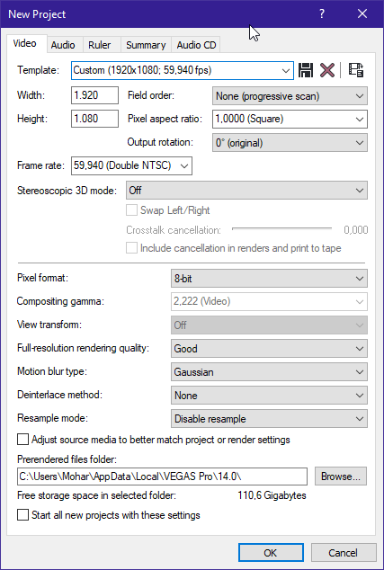
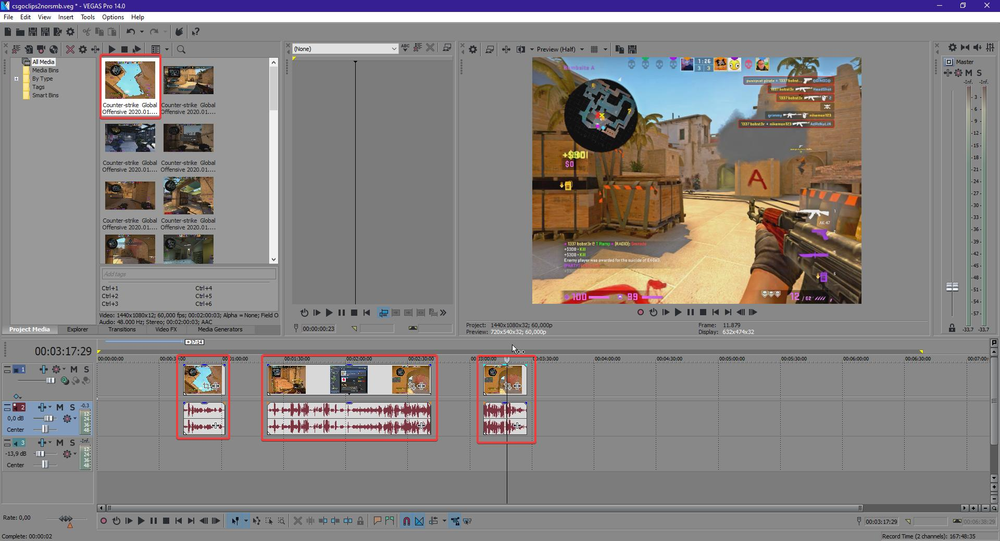
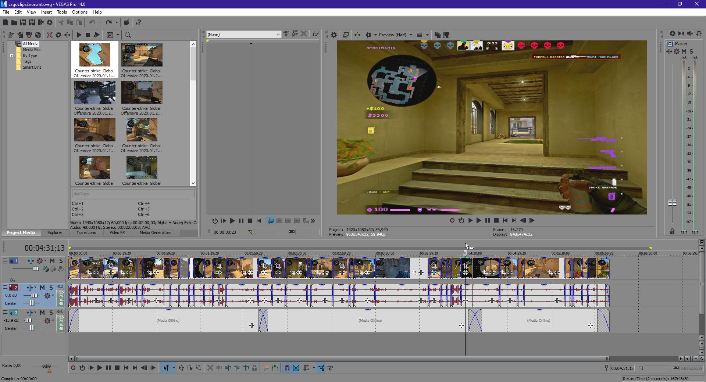
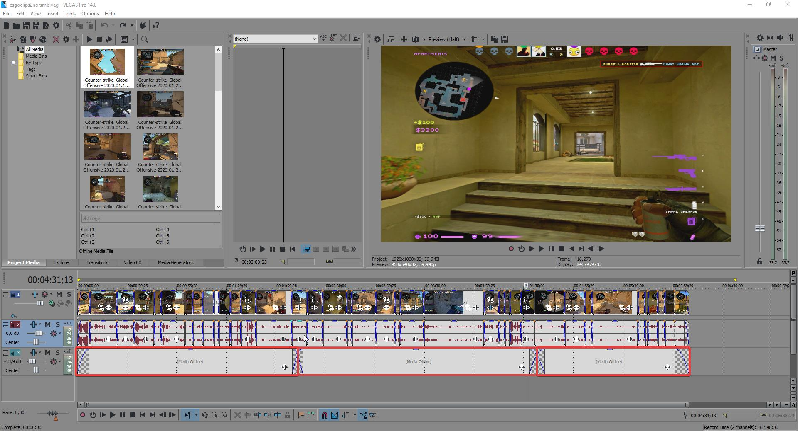
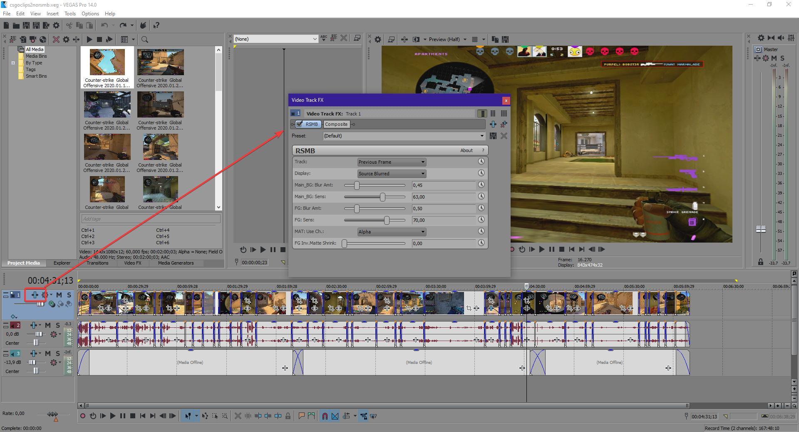
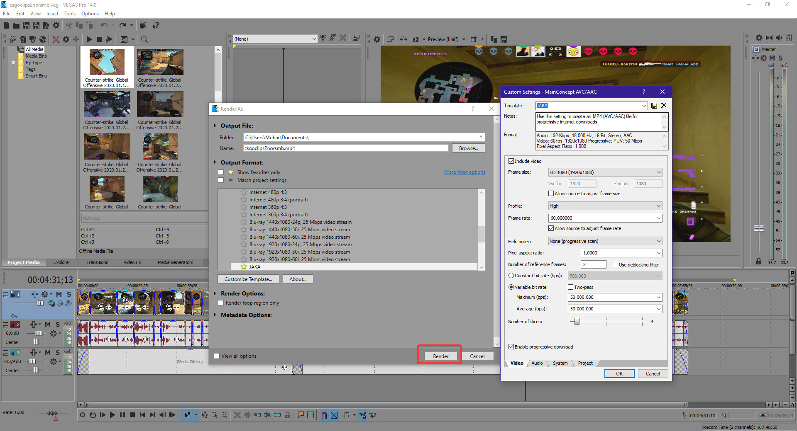

IZDELAVA
IZBEREMO FILE -> NEW -> IN PRILAGODIMO NASTAVITVE -> KO SMO ZADOVOLJENI KLIKNEMO OK


NATO NATO VRŽEMO NOT V NAŠ "MEDIA BIN" IN JIH ENEGA ZA DRUGIM POSTAVLJAMO NA TIMELINE TER OBREZUJEMO ZAČETEK, KONEC IN NEPOTREBNE DELE VMES V POSNETKU.
POSNETKE NATO ENEGA ZA DRUGIM OBREZUJEMO IN JIH POSTAVIMO ENEGA ZDRAVEN DRUGEGA, TER JIH POKRIJEMO ENEGA ČEZ DRUGEGA DA NAREDIMO LEPO TRANZICIJO MED POSNETKI SAMI.


NATO DODAMO TUDI MUZIKO IN JI OBREŽEMO NE POTREBNE DELE, TER POKRIJEMO ŽAČETEK IN KONEC PESMI Z PREJŠNJO ALI NASLEDNO PESMIJO DA NI PRAZNIH PROSTOROV.
NA KONCU LAHKO DODAMO RAZNE EFEKTE KOT NPR: RSBM (Motion blur) KATERI UPOČASNI ČAS IZDELAVE POSNETKA GROMOZANSKO A DODA LEP EFEKT SAMEMU POSNETKU; LAHKO TUDI SPREMINJAMO BARVE NA BOLJ SVETLE, BOLJ VIBRANTNE...


PO KONCU VSEGA GREMO NA FILE -> RENDER AS -> PRILAGODIMO NASTAVITVE -> KO SMO ZADOVOLJENI KLIKNEMO RENDER.